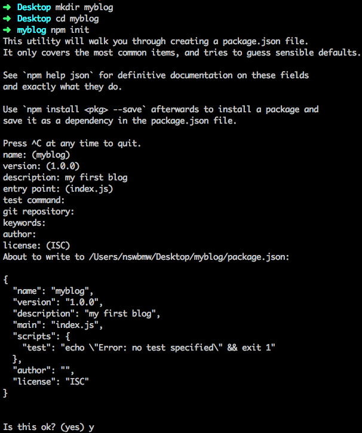

首先，我们新建一个目录 myblog，在该目录下运行 npm init 生成一个 package.json，如下所示：

注意：括号里的是默认值，如果使用默认值则直接回车即可，否则输入自定义内容后回车。
然后安装 express 并写入 package.json：
|
|
新建 index.js，添加如下代码：
|
|
以上代码的意思是：生成一个 express 实例 app，挂载了一个根路由控制器，然后监听 3000 端口并启动程序。运行 node index，打开浏览器访问 localhost:3000 时，页面应显示 hello, express。
这是最简单的一个使用 express 的例子，后面会介绍路由及模板的使用。
3.1.1 supervisor
在开发过程中，每次修改代码保存后，我们都需要手动重启程序，才能查看改动的效果。使用 supervisor 可以解决这个繁琐的问题，全局安装 supervisor：
|
|
运行 supervisor --harmony index 启动程序，如下所示：
supervisor 会监听当前目录下 node 和 js 后缀的文件，当这些文件发生改动时，supervisor 会自动重启程序。
上一节：2.6 npm 使用注意事项
下一节：3.2 路由